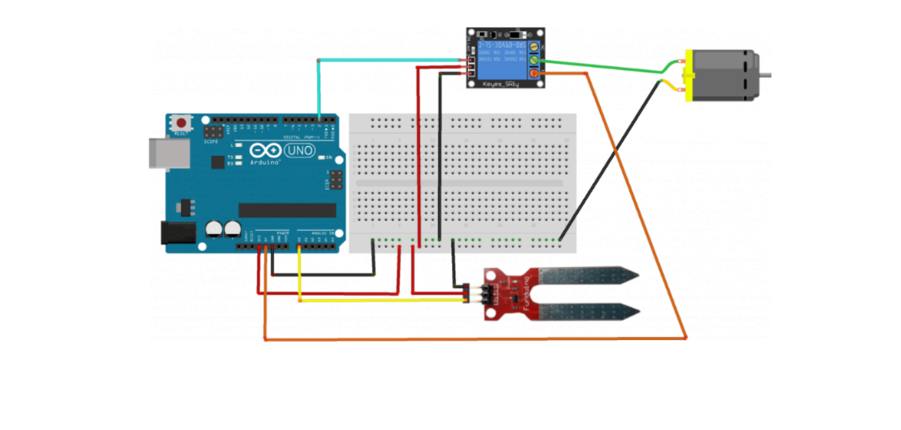
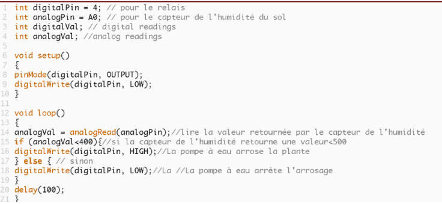

Dans le contexte du réchauffement climatique, la gestion de l'eau et la réduction des émissions de dioxyde de carbone sont devenues des préoccupations majeures. Les changements climatiques impactent les schémas de précipitations, mettant en péril les ressources hydriques. Les pratiques d'irrigation traditionnelles peuvent aggraver cette situation en contribuant au gaspillage d'eau.
Face à cela, l'utilisation de systèmes d'arrosage équipés de capteurs d'humidité du sol se profile comme une solution. Ces technologies permettent une irrigation précise, ajustée aux besoins réels des plantes, optimisant l'utilisation de l'eau et réduisant le gaspillage. En parallèle, favoriser des pratiques agricoles durables, notamment l'adoption de capteurs d'humidité, contribue à maintenir une végétation saine qui retient davantage de CO2, agissant ainsi comme une mesure d'atténuation des émissions de gaz à effet de serre.
Pour évaluer l'efficacité de ces approches, une comparaison entre différents modes d'arrosage, tels que le goutte-à-goutte, les capteurs d'humidité, et d'autres systèmes, sera entreprise.
Cette démarche vise à déterminer les méthodes les plus durables et efficientes pour répondre aux enjeux complexes de la gestion de l'eau et de la réduction des émissions de CO2, créant ainsi un équilibre essentiel dans la lutte contre le changement climatique.
Créer un système d'arrosage automatique en Arduino qui calcule le taux d'humidité du sol.
Ce projet consiste à réaliser un dispositif d’arrosage automatique pour des plantes, qui déclenche une arrivée d’eau seulement en cas de besoin. Utilisable pour une seule plante ou pour une petite plantation.
Disposé à proximité de la ou des plantes à surveiller, le montage surveille l’état de sécheresse de la terre à l’aide d’un capteur dédié, en caractérisant la résistance de la terre entre deux électrodes. Cette information sert ensuite à activer si besoin une pompe 5V, pilotée grâce à une carte Arduino afin d’alimenter les plantes en eau.
Pour le capteur d’humidité du sol :
Pour le relais :
Pour la pompe à eau :
Voici le montage réalisé sur TINKERCAD : TINKERCAD
Et voici le code envoyé sur la carte Arduino:
Le code est réalisé dans le logiciel ARDUINO.
Voici où copier le code : https://textup.fr/759789QZ